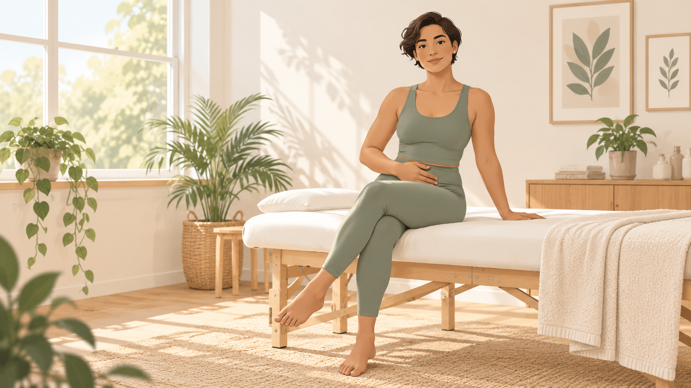
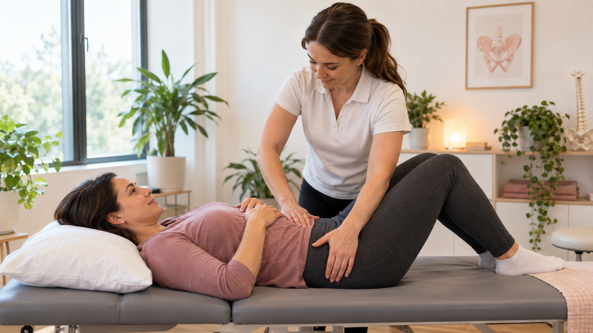

Pelvic Floor Physiotherapy
Pelvic floor problems can affect bladder control, comfort, exercise and everyday life. Pelvic floor concerns can affect both women and men. We provide private, one-on-one physiotherapy based on your symptoms and goals.
Serving Crossfield, Carstairs, Airdrie, Madden, Balzac and nearby communities.
at your pace

How pelvic floor physiotherapy can help
The pelvic floor is a group of muscles around the pelvis. Problems with these muscles can cause pain, bladder concerns, weakness or difficulty with daily activities. Treatment depends on what you are experiencing.
Bladder concerns
Help with leakage, urgency and changes in bladder control.
Pelvic pain
Assessment of muscles and movement that may be related to pelvic pain or discomfort.
Pregnancy & postpartum
Pelvic floor support during pregnancy and after childbirth when appropriate.
Core & pelvic support
Help with strength, breathing and coordination around the core, hips and pelvic floor.
Return to activity
A plan to help you return to daily activities, exercise, work or sport.
Private care
Clear explanations and treatment options based on your comfort and needs.

Your care is based on your needs
Your first visit starts with a conversation about your symptoms and what you want to improve. Your physiotherapist will then assess the areas that may be related to your concern.
We will explain what we find and talk with you about treatment options and exercises that may help.
View appointment optionsKnow Your Therapist
Gursharanjit Bhambra
Physiotherapist — Pelvic Health
Hi, I’m Sharan. I believe good physiotherapy starts with listening — understanding what you are experiencing, what is important to you, and what you want to feel confident doing again.
My experience includes pelvic health, musculoskeletal and neurological rehabilitation, vestibular care, functional dry needling, exercise prescription and sports injury rehabilitation. I enjoy working one-on-one with patients and creating care that feels personal, comfortable and easy to understand.
My goal is to help you feel heard and supported throughout your care. Together, we work toward improving movement, function and confidence so you can return to the activities and everyday moments that matter to you.
Pelvic floor problems can affect anyone
Women may seek pelvic floor physiotherapy for bladder concerns, pelvic pain, pregnancy, postpartum recovery, pelvic floor weakness or concerns affecting exercise and daily life.
Pelvic floor concerns in men
Pelvic floor problems can affect men too. Men may experience pelvic pain, bladder leakage, urinary urgency, frequent urination or other symptoms related to pelvic floor function. A physiotherapy assessment can help determine whether pelvic floor treatment may be appropriate.
What Patients Say
Feedback from patients treated at Can-Am Physical Therapy.
“I’m very impressed with Kit's level of knowledge. He took the time to assess thoroughly, explain the diagnosis in a way that is easy to understand, and provide exercises that truly target the root of the problem.”
“Ankit and staff are client focused, welcoming, and want to get to the bottom of the issue.”
What to expect at your first visit
Your first appointment is about understanding your symptoms and deciding what treatment may be helpful.
Talk
Tell your physiotherapist what you have been feeling, what has changed and what you would like help with.
Assess
Your physiotherapist will check the areas that may be related to your symptoms and explain what they find.
Plan
You will get a treatment plan and practical next steps based on your assessment and goals.
Pelvic Floor Physiotherapy in Crossfield
Can-Am Physical Therapy & Rehab is located in Crossfield and welcomes patients from nearby communities.
Crossfield, AB T0M 0S0
Frequently Asked Questions
What is pelvic floor physiotherapy?
Pelvic floor physiotherapy looks at the muscles and movement around the pelvis. Treatment is based on your symptoms, daily activities and goals.
Is pelvic floor physiotherapy only for women?
No. Pelvic floor problems can affect both women and men. Treatment depends on your symptoms, assessment and goals.
Can men have pelvic floor problems?
Yes. Men can experience pelvic pain, bladder leakage, urinary urgency, frequent urination and other pelvic floor symptoms.
Do I need a doctor's referral for pelvic floor physiotherapy?
In Alberta, a doctor's referral is generally not required to see a physiotherapist. However, some extended health insurance plans may require one for reimbursement.
Is pelvic floor physiotherapy covered by insurance in Alberta?
Many extended health insurance plans include physiotherapy coverage, but benefits vary by plan. Please check your individual coverage before your appointment.
How much does pelvic floor physiotherapy cost?
Pricing may vary depending on the appointment type. Please check the JaneApp booking page or call the clinic for current pricing.
Can pelvic floor physiotherapy help during pregnancy or after childbirth?
Pelvic floor physiotherapy is commonly used during pregnancy and postpartum. Treatment depends on your symptoms, health history and assessment.
Do I need to know exactly what is wrong before booking?
No. You can start by explaining what you have noticed or what has changed. Your physiotherapist can decide what areas should be assessed.
Where is Can-Am located?
Can-Am Physical Therapy & Rehab is located at 818 Railway Street in Crossfield, Alberta. We serve Crossfield, Carstairs, Airdrie, Madden, Balzac and nearby communities.
How do I book?
You can book through Can-Am's JaneApp booking system or call the clinic at 587-899-1653.
Ready to get started?
Book an appointment online or call Can-Am if you have questions before booking.